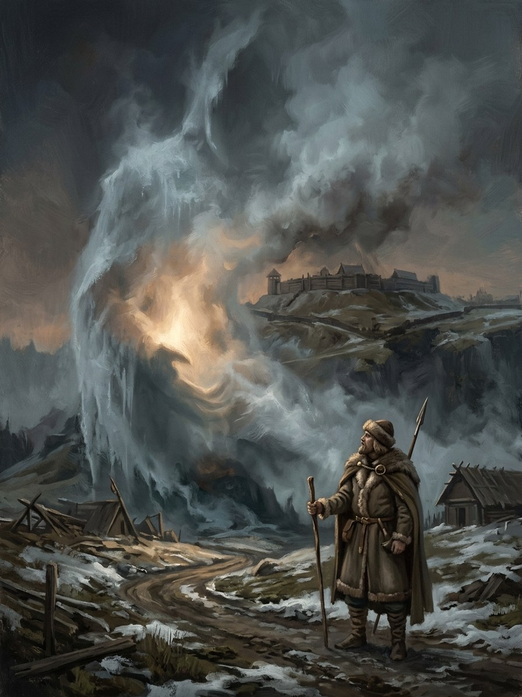

Aukso Rijūnas (Mercator-Rex)¶
Nature¶
Egregore (Cosmology §2.2): Aukso Rijūnas, Latin Mercator-Rex. It is fed by ledgers, tolls, land sold by the furlong, and counting-houses, including the Hanseatic ones and, from 1411, Poland. It grows wherever appetite gathers, including in Lithuanian hearts.
Aukso Rijūnas (Mercator-Rex)

Aukso Rijūnas (Mercator-Rex) · force¶
Type |
force |
Origin |
Egregore (fed by institutions) |
Note |
Mercator-Rex: voracious mercantile spirit fed by Hanseatic greed and coin debt. |
Wants¶
Profit: the landscape as a resource, men as ledger entries. It lends and asks for a pledge, usually a word not yet spoken.
Takes (its price)¶
A prosperity that “empties people out”. It gives gold on pledge, and the pledge is the other side of the crown: “Vytautas’s word, not yet spoken” (Book IV ch. 21). It drives the sale of Samogitia for silver and the theft of the crown.
Signs & manifestations¶
Coins that are always warm; a counting voice in quiet rooms: the Counter (Skaičiuotojas), soft and pleasant, counting geese, barrels, pearls, wheel-turns;. The warmest place in Olesnicki’s chamber is not the stove but the coin he never touches (ch. 20). Each murder in Vilnius in 1382 goes “into the Gold-Glutton’s chest” (Book I ch. 7).
Vessels, servants, claims¶
Patron of Olesnicki (from 1411), Skaičiuotojas as the voice. Fed by the Hanse and Poland; servant: the Counter. Vytautas hears the voice for thirty years and learns to carry it “like a pebble in the boot” (Book IV ch. 16). A servant girl tells Goštautas that Aukso Rijūnas eats no bread but is calmer when fed (Book V ch. 17).
Weaknesses¶
It can only count what exists. At Lutsk the crown is turned to leaves and the Gold-Glutton writes a zero on his account (Book IV ch. 30). It cannot buy a word that has not been spoken, and Vytautas’s refusal to let the Last Flame die is the one entry it cannot enter. Henė calls the Counter fond of showing numbers, never asking if you want to know (Book II ch. 13).
Arc across the books¶
I: present from the start, at the massacre and the merchants (ch. 7, 28). II: the Counter named (ch. 13). IV: dominant: Sigismund’s debts (ch. 17), the crown with the borrowed third (ch. 21), “the last bargain” (ch. 22), the zero (ch. 30). V: the feast and the voice among the lords (ch. 17, 21).
Relations
Antagonist of: IV · The Invisible Crown — mythic, grows
Fed by: Hanseatic merchants · Kingdom of Poland (Lesser Poland lords) (1411–…)
Patron of: Zbigniew Oleśnicki (1411–…)
Servants: Skaičiuotojas (the Counter)
Nature Egregore (Layer II). Grows wherever appetite gathers, including in Lithuanian hearts
Born of Ledgers, tolls, land sold by the furlong, and counting-houses: the Hanseatic ones and, from 1411, Poland
Vessels Patron of Oleśnicki (from 1411). Servant: the Counter. Fed by the Hanse and Poland
Wants Profit: the landscape as a resource, men as ledger entries. It lends and asks for a pledge, usually a word not yet spoken
Takes A prosperity that empties people out. It drives the sale of Samogitia for silver and the theft of the crown
Signs Coins that are always warm; a counting voice in quiet rooms; the warmest place in a room being the coin that is never touched
Weaknesses It can only count what exists. A word not yet spoken cannot be bought: Vytautas's refusal to let the Last Flame die is the one entry it cannot enter
The Counter. Its voice: soft, pleasant, counting geese, barrels, pearls and wheel-turns. Vytautas carries it for thirty years like a pebble in the boot.
The zero. At Lutsk the crown is turned to leaves and the Gold-Glutton writes a zero in its ledger.
Counting-rooms. Tollhouses, commanderies, Hanseatic factories, Kraków. Strongest wherever money changes hands and dominant in Book IV.
Where it fails. Rooms where something is given away without counting.
Book I. Present from the start, at the massacre and the Hanseatic merchants (ch. 7, 28).
Book II. The Counter is named (ch. 13).
Book IV. Dominant: Sigismund's debts (ch. 17), the crown with the borrowed third (ch. 21), the last bargain (ch. 22), the zero (ch. 30).
Book V. The feast and the voice among the lords (ch. 17, 21).
Connections¶
graph LR
book4["IV · The Invisible Crown"]
gold_glutton["Aukso Rijūnas (Mercator-Rex)"]
hanse["Hanseatic merchants"]
olesnicki["Zbigniew Oleśnicki"]
poland["Kingdom of Poland (Lesser Poland lords)"]
skaiciuotojas["Skaičiuotojas (the Counter)"]
gold_glutton -->|Fed by| hanse
gold_glutton -->|Fed by| poland
gold_glutton -->|Patron of| olesnicki
gold_glutton -->|Antagonist of| book4
skaiciuotojas -->|Servant of| gold_glutton
style gold_glutton stroke-width:3px